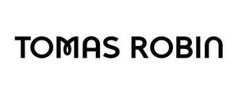

Trade Mark Journal No.2025/031 1 August 2025
UK00004237186 21 July 2025 (9,25,35,41)
Mark 1
TOMAS ROBIN
Mark 2

- Class 9
- Software; apparatus for recording, transmission or reproduction of sound or images; audio-visual recordings, namely, compact discs, tape cassettes, audio cassettes, audio tapes, audio discs, phonograph records, CD-ROMs, video tapes, video cassettes, video discs, DVDs, digital audio tapes (DATs), downloadable MP3 files, and laser discs, all featuring music, sound tracks, television programs and motion pictures; magnetic data carriers, recording discs; recorded musical performances and music videos; sound recordings; audiovisual recordings; downloadable music and video files; downloadable video recordings featuring music; digital music downloadable from the internet; downloadable podcasts; computer software for processing digital music files; mobile apps featuring musical performances; recorded content.
- Class 25
- Clothing; footwear; headgear; t-shirts; hoodies; jackets; hats; caps; socks; trousers; sweatshirts; jumpers; shirts.
- Class 35
- Retail services, online retail services and mail order services in relation to bags, clothing, footwear, headgear, t-shirts, hoodies, jackets, hats, caps, socks, trousers, sweatshirts, jumpers, shirts; promotion of musical artists and performers; marketing services in the field of music; merchandising services for musical artists; online retail services relating to music recordings and recorded content; advertising; business management of performing artists.
- Class 41
- Entertainment; live musical performances; cultural activities; record production; music production; audio recording and production; videotape production; motion picture song production; production of video discs for others; recording studios; entertainment services, including producing musical audio and video programs; distribution of musical and audio and video programs; music composition and transcription for others; song writing services; provision of non-downloadable music via streaming websites; production of sound and video recordings; music publishing services; entertainment in the nature of live performances by a musical artist, musical group or musical band; entertainment in the nature of visual and audio performances by a musical artist, musical group and musical band; entertainment, including live music concerts; entertainment services, namely, providing a website featuring musical performances, musical videos, related film clips, and photographs; entertainment services, namely, providing prerecorded music, information in the field of music, commentary and articles about music, all online via a global computer network; entertainment in the nature of live traveling tours by a professional entertainer featuring music.
TOMAS ROBIN MUSIC LIMITED
Representative: Appleyard Lees IP LLP